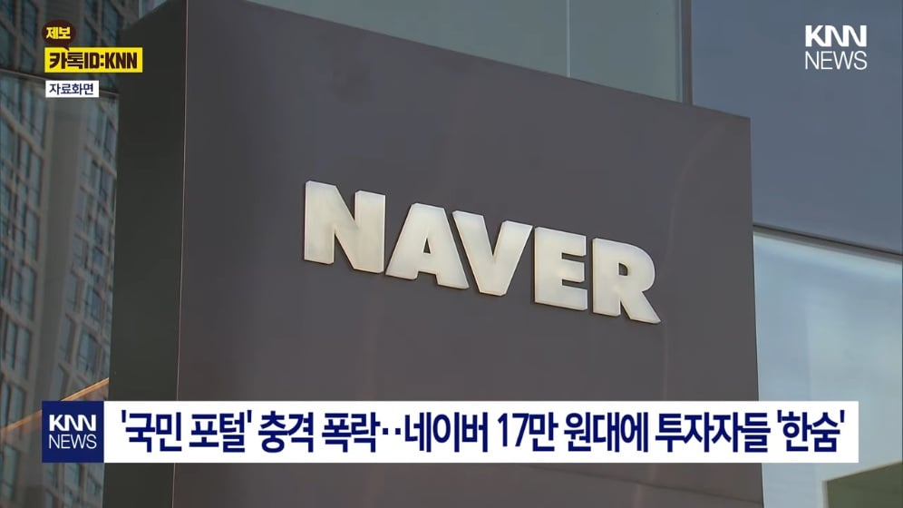
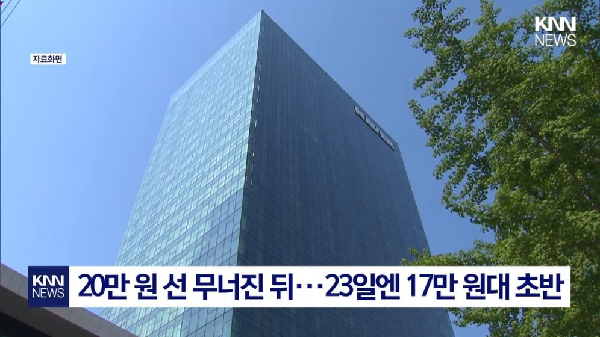
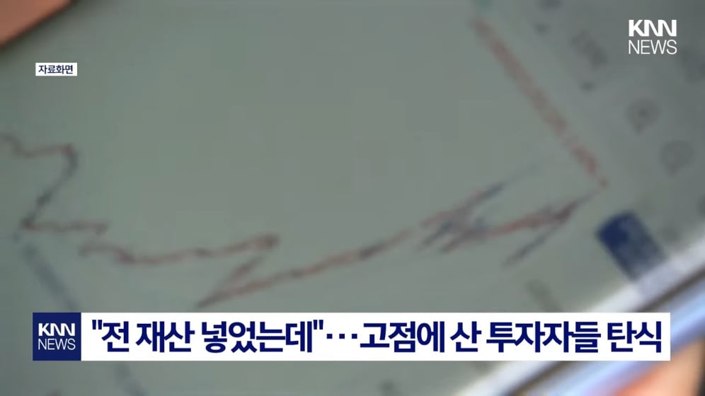
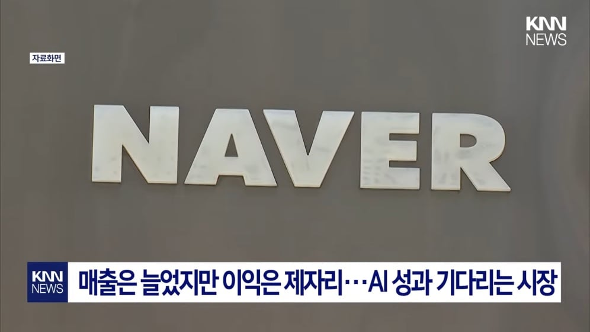
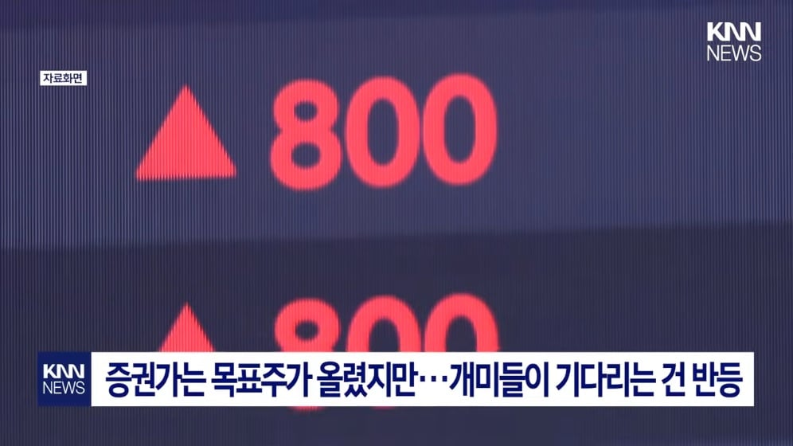
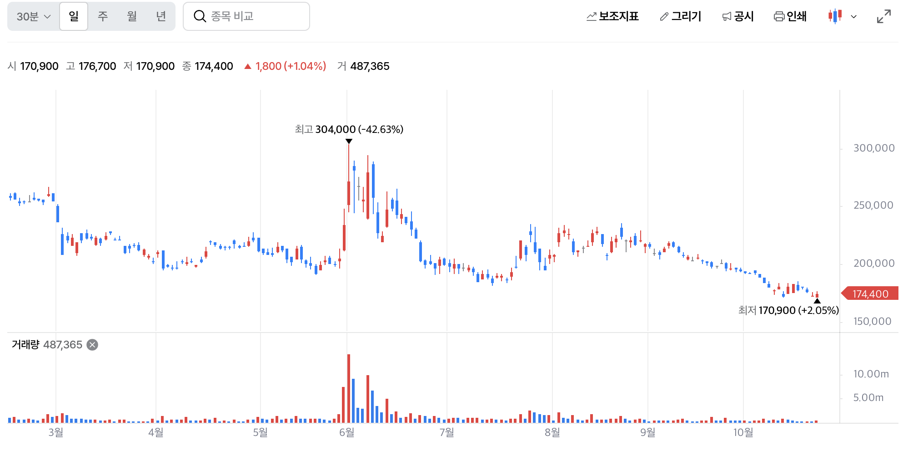

참고: 📉 폭락에 모두가 피눈물을 흘리는 지금, '9천피' 대반전 시나리오가 나타났다 📈






아빠는 네이버를 샀고 와이프는 현차를 삼
제3자 입장에선 네이버가 더 ㅈ같음
현대차 이 ㅆ...
올해 아반떼 투싼 그랜져 다 신차 나오는 황금년도? 인데 가격 책정으로만 이슈되고 로봇은 지네 그룹에서 아예 빼려는 것 같음. 미쳤다 진짜
지분구조보면 그룹에 넣기 아깝지 ㅋㅋㅋ 본인이 몇퍼나 들고있는데 지금 평가가치가 나날히 상한가 찍고있고 따로 휘두르는게 무조건 좋은데
하닉이나 현대차나 다를게 없음 ㅋㅋㅋ
기존 주주들 이득 안챙겨줄수록 지들 이득이 늘어난다고 생각하는 것 같음
4달만에-60%는 뭔가싶은데 쟤도 고점(21년)대비-60%대임ㅋㅋㅋ 1년만에 60%날아갔다가 좀 올라왔던거
나도 한주 가지고있지만 꾸준히 빠지더라..
근데 하닉보단 덜 빠져서 갠춘 ㅇㅇ
코스피 고점판독기
네이버 엘지
국장은 가치투자 하면 호구 병신임 ㅋㅋ
다 떨어졌는데 뭐
현차는 올해 오른거 다 빠짐..
대체 왜 사는 거지
네이버가 대박을 쳐서 돈을 많이 번다고 주가가 오르겠냐고
독하다 독해 아직도 국장을....
네이버가 이제 남은건.. 데센 임대인가..
고점에 샀으면 뭐든...
쌀 땐 떨어진다고 안 사고, 비쌀 땐 올라간다고 사니 그렇지
하락에 스트레스받는 것 자체가 그릇에 넘치는 금액이고 투기라는 증거임
투자라면 이해할 수 있는 종목이고 앞으로 더 오를 거란 확신이 있으니 저점매수 기회라고 좋아해야지
버핏이 지금 당장 -99% 처맞으면 살 거 같음? 손절 같음?
국장은 버핏도 털고나가지 않았나
손절도 실력인데
개인투자자들은 손절을 못해서 망함
-30% 40% 될때까지 들고있는게 좆밥인증임...
아파트도 비슷하더라
안 오를땐 안 사고 오르면 사야한다고 난리남
현대차가 진짜 개빡이다 시팔소리가 절로 나옴
개 좆같다 진짜 시팔
네이버는 그냥 "국익을 위해 기다려라" 이거 원툴 아님? 네이버 광고 단가가 유튜브 구글보다 비싼거보고 충격 받았는데 ㅋㅋㅋ
사람들이 많이 쓴다고 네이버에 주식넣는 사람들은 왜 전 국민이 쓰는 한전 주식은 안사냐? ㅋㅋㅋㅋㅋ
감전될까봐
왜 전 국민이 쓰는 한전 주ㅅ땟때익뜨띠액뜨땍
차라리 비트코인........
네이버는 기술개발 축소했을때부터 예견된 일이였다고봄.
걍 여긴 이젠 쇼핑몰회사 아닌가
쇼핑몰 + 인터넷방송 뿐..
Ai에 모든게 따잇
웹툰 회사잖아ㅋㅋㅋㅋㅋ
웹툰회사는 따로상장함ㅋ
이때 사야지 ㅋㅋ 사랄때는 팔고
크아아아아....
주식이랑 그 회사랑 별로 상관없는거같음..
저때 뻥튀기 됐을때는 젠슨황 방문해서 막 사람들 기대심리가 반영된거고
막상 실질적인건 없고
최근에는 쇼핑몰 사업 확대한다고 지출만 늘어나니까
제자리 찾아간거임 걍
gpt 막 나왔을때 네이버 관련부서 책임자?란 놈이 나와서
ai 이거 별거 아니고 한참 남았다
우리는 한국어 특화로 가겠다
이렇게 부정적으로 말하는거 보고 애네는 안되겠구나 싶었음
어. 나도 ㅋㅋ 그 영상보고 애네들은 답이 없구나 생각함. 그 당시에도 gpt AI가 전세계 통역 가능성을 보여줬는데 한국어 특화 타령하고 사우디 수출?? 이런 황당한 소리 하더라. 근데 지금까지도 네이버는 자체 개발한다는 ai는 안보임. 대부분 기업이 중국 ai 오픈소스 가져와서 베이스 깔고 시작함
지금인가
네이버 nn년 박은 사람들 이득 거의 못봤다고 나오던데
애초에 네이버를 왜 고평가를 하는거지
제대로 하는게 하나도 없음
유통 광고 검색엔진 방송 플랫폼 코인 로봇 ai 클라우드 공장자동화 다 한다고 나대는데 이 중 탑급이 있는것도 아니구만
들어갈때는 똑똑한 사람들 많긴한데
왜 들어가고 나서는 죽쑤고있는지 ㄹㅇ
에이아이가 안하면 손해인데 하면 기존 이득이랑 차이가 거의 없어서 문제
초기비용존나들고
자 드가자
젠슨 황 네이버 온다고 할 때 미수까지 땡겨서 달달하게 먹었다 고맙다ㅎㅎ
저걸왜삼ㅋㅋ
네이버 ai 잘하고 있는건 맞음? 왜 못들어본것같냐
현대차도 반토막이야 ㅋㅋㅋ
네이버는 그래도 덜 떨어졌네
현대차가 ㄹㅇ인데